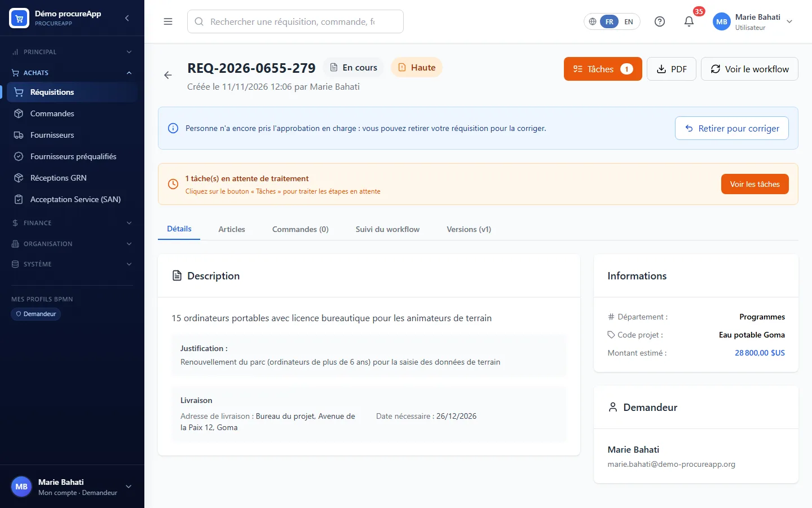

La réquisition
DemandeurMarie Bahati
Marie crée la réquisition comme dans le cas « Cycle d'achat complet » : 15 ordinateurs (article du catalogue) et 15 licences, estimés à 28 800 USD sur la ligne budgétaire EAU-01. Jean Mukendi, chef de projet, la valide et désigne Paul Kasongo comme agent achats.
